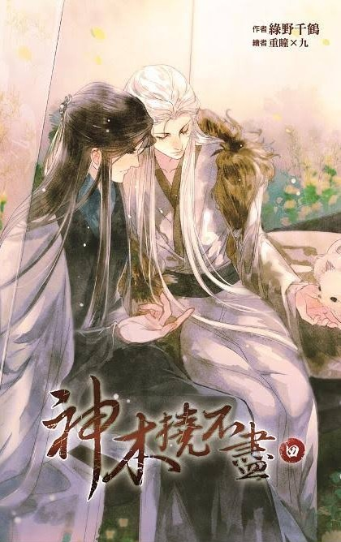

Mo Tianliao era un maestro armero y cultivador demoníaco. Cuando se difundió la noticia de que estaba a punto de completar un arma divina, cultivadores tanto del bando demoníaco como del ortodoxo lo persiguieron y lo mataron. Por un golpe de suerte, logró poseer un nuevo cuerpo y renació.
Entonces, ¿qué fue lo primero que pensó tras renacer? ¿Vengarse? ¿Conquistar el mundo?
Mo Tianliao: ¡Tengo que encontrar a mi gato!
—
Mo Tianliao: ¿Por qué no me dejas abrazarte? ¡Antes eras mi gato!
Maestro: (desenvaina las garras)
Mo Tianliao: ¡Jajaja, este discípulo tiene demasiado respeto por el Maestro, este discípulo no puede soportar dejar que el Maestro camine por el suelo!
Maestro: (levanta la pata y envía al discípulo a volar)